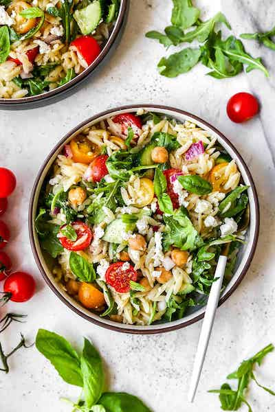

Orzo Spinach Salad

Description
This mediterranean staple is simple to make yet so satisfying!
Enjoy the wonderful flavors while still keeping your health in
mind.The dish is rich with medley of vegetables and healthy fats
Orzo is a short rice shaped pasta. They are versatile and easy to find
in any grocery store. Due to its size, your always going to get
a chance to taste the deliscious pasta with every bite.
Ingredients
- Orzo Pasta
- Arugula or Spinach
- Cucumber
- Grape Tomatoes
- Red Onion
- Feta Cheese
- Fresh Basil
Steps To Cook
- Boil a pan with salted Water. Cook orzo pasta
until al dente.
- Drain the water from the pasta and rinse in cold water.
Transfer the pasta to a large bowl.
- Add the spinach, cucumbers, tomatoes, chickpeas, onion,
feta, and basil to the orzo pasta.
- Stir gently then drizzle your preferred dressing over
the top of the salad and serve.
Bon Appetit!